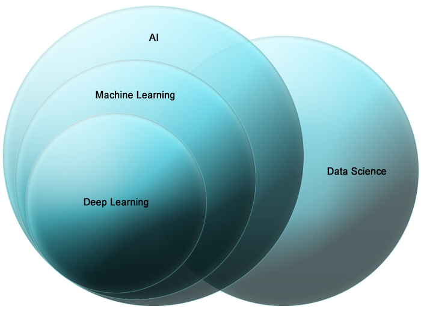

Data Science
Data Science
Définition (une parmi tant d'autres)
Science de l'extraction de connaissances et d'informations à partir de données.
Il existe de nombreuses définitions de la science des données. Le domaine lui-même n'est pas encore assez mature pour être très bien défini.
Les 'Data Scientists', Analystes, 'Miners', Ingénieurs... ont eux-mêmes des définitions et des domaines variés (et confus !).
C'est la raison pour laquelle j'aime cette définition simple et pourtant efficace.
A partir de là, il est possible de construire sa propre philosophie et ses propres compétences en tant que 'Data Scientist'.
Pourquoi la Science des Donneés ?
- Volume : il existe de plus en plus de donneés disponibles
- Rapidité : de nouvelles données sont disponibles chaque minute, seconde...
- Hétérogénéité : les données sont de formats très variables
➤ Il faut donc des outils de plus en plus agiles et puissants pour traiter cette masse de données.
Science des Données vs Intelligence Artificielle
La science des données et l'IA ne sont pas en compétition.
Elles sont en fait convergentes à bien des égards.
Processus
- Formulez la question
- Trouvez ou générez les données pour répondre à cette question
- Explorer, analyser, modéliser les données
- Tirer des conclusions, rédiger des synthèses, communiquer
Le 'data scientist'
- Répond aux questions par l'analyse des données
- A des capacités à résoudre les problèmes
- Examine les données et fournit des informations
- Communique ses conclusions
Outils
- R and R Studio
- Python
- Le café!